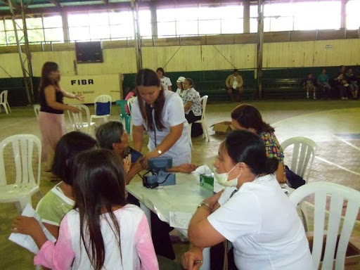
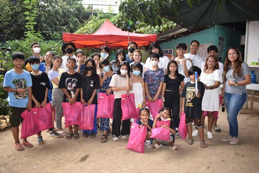
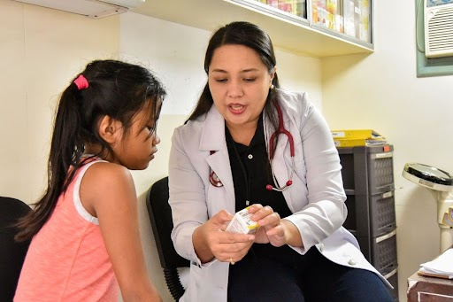

> Concert Summary
The vibrant community of Sitio Bebe is facing a serious health crisis, a situation that has been made up the ongoing COVID-19 pandemic. The lack of access to clean water, healthcare, medical supplies, and health education has left them vulnerable and in dire need of assistance. Data from 2019 reveals a concerning trend: while the total number of cases in Sitio Bebe is lower than in Central Luzon, the percentage of cases relative to the population is significantly higher. This suggests that Sitio Bebe has a higher prevalence of diseases like acute respiratory infection, acute lower respiratory tract infection, and hypertension compared to Central Luzon.
Community also faces a shortage of healthcare professionals, making it difficult to access medical care when needed. To address this urgent situation, we are organizing a fundraising concert to provide immediate relief and support long-term solutions. The funds raised will be used to purchase essential medical supplies and equipment, ensuring residents have access to the care they deserve.
We will also invest in health education programs, empowering community members with knowledge and skills to prevent future health issues. But our vision goes beyond immediate relief. We believe in creating lasting change, in building a brighter future for Sitio Bebe. We are advocating for long-term solutions like establishing wells to provide clean water access for all residents. This will ensure a constant supply of clean water, a fundamental need for good health. We also believe in investing in the future by establishing medical training centers for the youth of Sitio Bebe. This will equip them with the knowledge and skills to become future healthcare providers for their community, ensuring a sustainable and healthy future. This concert is more than just a fundraiser; it's a statement of solidarity, a commitment to improving the lives of the people of Sitio Bebe. Every donation, every act of support, is a powerful message that we are united in our efforts to build a healthier and more sustainable future for this community. We are deeply grateful for your generosity and believe that together, we can make a real difference in the lives of the people of Sitio Bebe.
